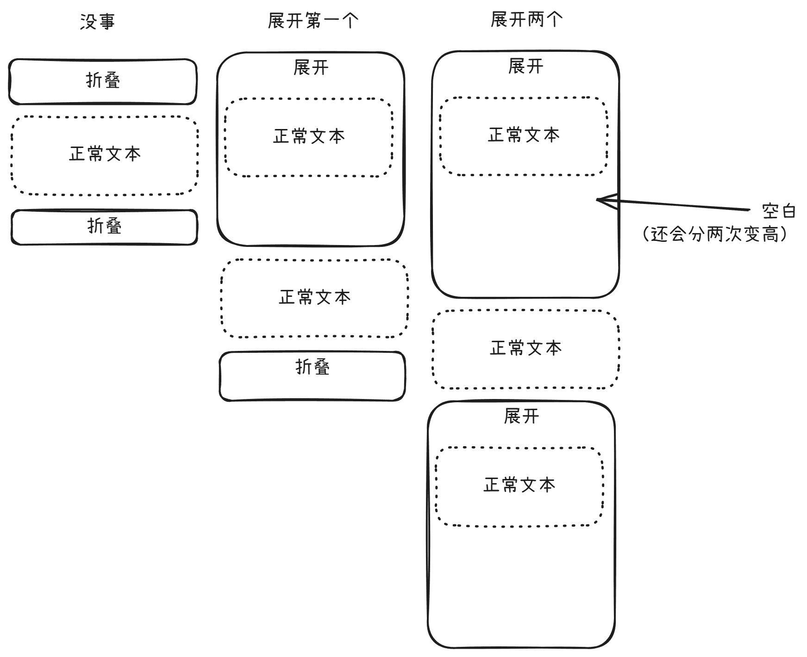

LMCanvas
这是一个新的尝试
一个呢，我从原本大模型软件的代码预览功能扩展了一下，使其不局限于单次生成与执行，而是反复生成执行，让用户和生成的界面交互，界面把没有做好的部分交给ai，ai搞后端
这源自于我的一个想法：以后的系统直接和ai交互，界面全部是ai生成的，后端操作全部是是ai处理的，但这至少一段时间内不会实现，因为算例和模型能力原因
另一个呢，这是我第二次碰electron，第一次碰react和vite
……
哦忘了贴链接GitHub - for-the-zero/LMCanvas: UI generated by LLM, Interact with LLM
另外就是有视频介绍
开发经历
路径
这个项目一样也是求助过ai很多遍的，有些问题我不会
首先就有路径的问题，electron请求路径肯定不能直接写对吧，它告诉我用__dirname
但是呢，我这里用了esm的方式，所以没有__dirname这种东西
然后ai就整出来了const __dirname = path.dirname(url.fileURLToPath(import.meta.url);这种操作
打包前没问题，打包后就有问题了
后来我一看实际访问的路径：... /node_modules/electron/ ...
彳亍
解决方案：打包后的用app.getAppPath()
依赖冲突
vite给我的react版本是19+的，而fluent Ui React Components由于兼容性原因，19官方说用不了（强制的话其实也能运行）
遂手动修改package.json降级react
获取深色模式
这nativeTheme可是个神奇的api
electron原本是给cjs设计的，使用esm的时候偶尔出问题，这就是其中之一
这玩意只给了cjs用！
害得我在preload里面引入
然后就是这个组件库自己有提供深色模式的，在FluentProvider里面
神奇的是，它提供的主题有且仅有webLightThemeteamsLightThemeteamsDarkTheme
？我缺的webDarkTheme谁来补
（我都用了Teams的主题）
折叠卡片
原本我想的是让代码块和模型思考内容用折叠卡片折起来的
组件库里面有一个折叠的组件，但是没到正式版
拿来用了，结果巨抽象，修不好一气之下删掉了
（同时还有个flex布局问题，硬是滚动不起来，后来再套了一层解决了）
bug如图：

文件处理
用的是electron的dialog，发现渲染进程不能直接用
觉得没什么，放preload不就行了
还是不行
于是就在preload里面写ipc，这样子才能工作
api请求和ipc
这一部分基本上把react萌新该踩的坑给踩了
一个呢state不会马上刷新，给set_xxx传个函数就老实了😈
另一个呢不要在组件的函数体直接定义，因为每次刷新都会定义一遍（好像是），搞得我在测试的时候连续重复请求把电脑卡爆了
应该在useEffect中定义才对，但是呢，由于StrictMode，这玩意会执行两次，在组件函数外面加一个变量测一下有没有注册过监听器就行了
Markdown渲染
一开始呢，我直接让它能渲染文本中的html，想着也没啥，结果ai生成了一个html标签，炸了
那我还想要保留think标签（无论是用think标签还是用chunk.delta.reasoning(OpenRouter等)还是用chunk.delta.reasoning_content(SiliconFlow等)我都转换成了think标签）的渲染
搞不定，最后ai给了把内容分块的方案，在处理markdown之前处理这个标签
还有就是代码块的显示问题，分不清单行和块状的代码块
按语言来肯定不行，单行肯定没有语言，多行可以没有语言，最后靠行数是否为1区分，虽然这么做也会有些bug，但是至少看起来应该没什么问题了吧
Dropdown
我要使用下拉选择框的组件，在这个组件库里面我一眼就看到了Select
拿来用了，发现选项竟然是浏览器原生的，好割裂
害得我发了issue，后来才知道，还有一个组件叫做Dropdown
行，我改
运行
发现<option>要换成组建的<Option>
运行
发现它用的不是onChange，终于看了一下文档，但是没细看，改成了onOpenChange
运行
还是不行，再看一眼，原来是onOptionSelect
运行
还是不行啊？啊？啊？
打印一下看看？
答：把data.value改成data.nextOption.value即可
构建
首先，nsis的icon必须是.ico而不能是.png
我这里转换出来的图标似乎有点问题，但是我懒得搞，没修
差不多就这些了
其实你可以发现，这个和上一篇文章的内容有点关联
是的，上一个项目其实就是为了给这个做铺垫